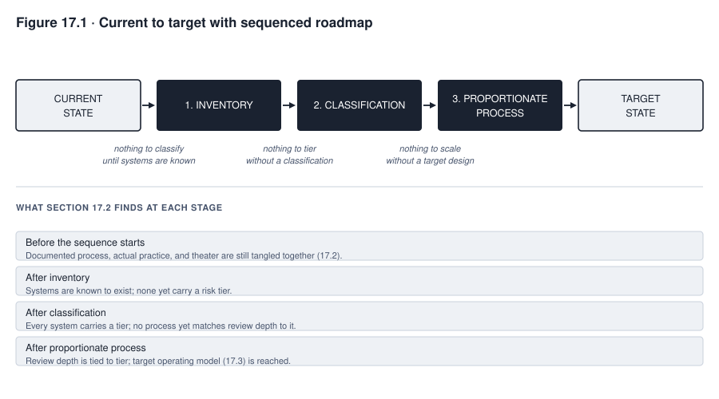
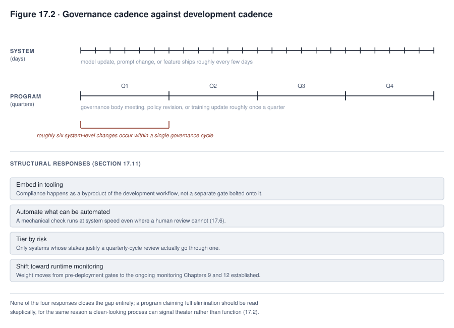

17. Implementing AI Governance
Consider a constructed scenario, which means a made-up example. It continues the running cases, the examples that return throughout the book. Calloway Industries chartered an AI governance program in the same year that TalentScreen’s scheduling capability became agentic. A program is chartered when a written document sets it up and gives it authority. TalentScreen is one of the AI systems that earlier chapters follow. A governance program is the set of rules, roles, and checks that an organization uses to control how it builds and uses AI. An AI system is agentic when it can take actions by itself.
The program’s first designers wrote a detailed charter. They assembled a governance body, which is the group that reviews and approves AI uses. They also specified an impact assessment process, which is a structured review of how a system could affect people. The designers did all of this before a single deployment, a use of an AI system in real work, had passed through it.
Six months later, an internal review found a problem. The assessment process existed in the form the charter described. But it was used for only two of Calloway’s three AI deployments. No one had decided to exempt the third. The process was documented, yet it was not used for every deployment it was chartered to cover. No legitimate exception was on record for the deployment that skipped it.
A governance program that its intended users are not using has failed at governance. This holds when no one has documented and authorized an exception. It also holds however complete the documents are. One case is different. A process may go unused because no qualifying deployment, one the process was meant to cover, happened in a given period. That case is ordinary, and the standard is not meant to catch it.
Calloway’s experience shows a way to think about a program. A governance program is something people build. It is a designed product. It has users who must run it day to day. Those users have requirements, and they can state them if asked. The program also has failure modes, and these show up when the documented process quietly drifts away from what people do.
Building a program takes several steps. A team first assesses where the program stands today. It then defines what the program should look like, given the organization’s own size and exposure. It plans the path from one to the other. It gathers requirements from the people the process falls on. It designs controls against a real budget. It measures whether the program manages risk or only documents activity. The last step deals with a problem of speed. AI systems change fast, and programs change slowly.
What you will be able to do
- Assess a governance program’s current state by comparing the documented process with actual practice. Count any unexplained gap between them as a finding and not as an oversight.
- Define a target operating model, which is a description of how the program should be organized and run. Base it on the organization’s risk exposure, its legal duties, and its portfolio. Risk exposure means how much risk the organization is open to, and a portfolio is the set of AI systems it runs. Do not base it on size alone. Then plan the path from the current state to the target. Put the steps in order of dependency, where a real dependency exists.
- Gather requirements from the people a governance process falls on. Treat a workaround, which is a way people get around the process, as a clue to investigate. A workaround is not a requirement that is already confirmed. Design controls, which are the checks and safeguards that carry out a rule. Match them to the level of risk and make them viable on a real operating budget.
- Evaluate whether a governance program manages risk. Use outcome metrics, which measure results, instead of activity counts. Diagnose why a program is being bypassed.
17.1 Governance as something you build
A governance program has users, just as a deployed AI system does. The users are the developers whose work the program reviews. They are also the business owners, the people responsible for a system’s business use, whose deployment decisions the program controls. The last group is the reviewers who staff the program.
A program has requirements too, whether or not anyone writes them down. Each user expects the process to do certain things and to take a certain amount of time. Those expectations are the requirements.
A program also has failure modes, which are the typical ways it breaks. The most common is silent divergence. The documented process looks perfect on paper. Meanwhile, actual practice drifts away from it. The drift happens because the written version stopped matching what the work required.
A program that its users are not using, with no documented and authorized exception, has failed at governance. A legitimate exception is not that failure, and neither is a period with no qualifying event.
Seeing a program as a designed product changes what building one involves. Approving a policy is the start of putting it in place. It is not the end. After approval, the policy still needs several things. The people it binds must hear about it. They need training. It must be built into the controls and tools that enforce it. It needs a channel for exceptions. It also needs regular review. A policy that stops at “written and approved” has finished the smaller half of the work.
A design method for AI systems has six parts. A team assesses before it designs. It gathers requirements from real users. It builds controls that match the risk. It builds a cost model, which is an estimate of what a control will cost to run. It rolls the system out in stages. It measures outcomes. The same method transfers usefully to the governance process itself.
The comparison to building a product has limits, though. A governance program is not just a product built for a different subject. It needs legal authority, and a product does not. It requires organizational change management, which is the work of helping people adopt new practices. It requires incentive design, which uses rewards and consequences, and that design must reach people outside any single reporting line. It also involves independence. An assurance function, which is a team that checks that work is done properly, needs independence from the process it assesses. Finally, a program carries institutional accountability, which a piece of software can never carry. So the parallel is a useful design lens. It does not say that putting a program in place is the same activity as building a system.
17.2 Current state assessment
A current state assessment looks at where a program stands today. Three things are easy to mix up, and teams blur them together by default. The first is what exists on paper. The second is what works in practice. The third is theater, activity that happens and produces documents but does not materially affect any decision.
Before calling anything theater, the assessment needs criteria for effectiveness, and it must state them in advance. The criteria are five questions. Does the process catch issues before deployment? What is the quality of the evidence a review relies on? Does the process ever attach conditions to an approval or escalate a case, which means pass it to a higher authority? Does it reduce risk in a way that can be measured over time? Do its decisions hold up on appeal or in a later review of outcomes?
Calloway’s own assessment shows why the criteria matter. The deployment approval process existed as documented. It was used for only a portion of deployments. The deployments that went through it received a sign-off, which is a formal approval, from the governance body. That sign-off had never once led to a rejection or a required change. A zero-rejection record is consistent with theater. It is also consistent with a process that screens out problems earlier, so that only sound cases ever reach that review. Calloway’s team could not tell which explanation was true from the rejection rate alone. It had to check the effectiveness criteria above.
The assessment produces more than one gap statement. Its output has six parts:
- A current profile of what exists.
- The confidence the evidence supports in that profile.
- A baseline of capability and resources, which is a starting measurement to compare against later.
- The effectiveness results described above.
- The root causes behind any material gap.
- The risks and dependencies that a prioritized gap list, which ranks the gaps by importance, needs to reflect.
An honest assessment uses several sources of evidence. This is called triangulating, which means checking a finding against more than one kind of source. The assessment should not trust or discount any source because of its category.
Interviews with the governance body about how well its own review works give one useful data point. Interviews with the developers and business owners the process falls on give another. Each group carries a bias. Reviewers lean toward defending a process they run. Developers lean toward resisting a process that constrains their work. Neither position is automatically the more diagnostic one, which means the one that reveals more.
The records give a third kind of evidence. They include deployment records and time stamps from the ticketing system, where work requests are tracked. They also include the systems inventory, which is the organization’s list of its AI systems. This evidence is harder to shade, because a system either has a matching assessment record on file or it does not. An honest assessment combines all three kinds of evidence. They are interviews from both sides plus the documentary record.
17.3 Target operating model
A target operating model describes how a governance program should be organized and run. What it should look like depends on five factors, which Chapter 13 sets out for choosing an operating model. They are the organization’s scale, how mature its existing risk function is, and how exposed its sector is to regulation. A sector is an industry, such as banking or health care. They also include the portfolio of systems it governs, and the functions that already exist to build on or coordinate with.
No universal target operating model is described here, on purpose. A program copied wholesale from a different organization tends to produce a mismatch. The result is a process sized for a portfolio and a risk exposure that the adopting organization does not have.
Organization size is one input to that sizing. It does not show how much governance depth is warranted. Take a small organization that runs even one high-impact, high-tier system, one rated at a high level on a scale of risk. Its duty scales to the system’s own risk, to how much law applies to it, and to the people the system affects. The duty does not scale to the organization’s headcount, which is its number of employees. A target built only on “small organization, so light program” can under-govern the one system that needs more.
Functions that an organization already runs are part of the target. They are not a rival structure to work around. Consider a bank. A bank already runs a model risk management function under prudential regulation, the body of rules that financial regulators apply to banks. Model risk management, or MRM, is the work of testing and reviewing the models that a bank relies on. That function already has ways to validate models, documentation standards, and independent review. An AI governance program should extend that work and not duplicate it.
A bank must check what its existing function covers. It should check against its current, dated supervisory guidance, which is advice from its regulators, and it should not assume. For example, interagency model risk management guidance, issued by several government agencies together, was updated in 2026. Generative AI creates new text, images, or other content. Traditional and non-generative models do not create content of that kind. The guidance extends to qualifying traditional and non-generative models, which are the ones that meet its own conditions for coverage. The guidance explicitly excludes generative and agentic AI models from that framework’s reach (checked 2026-09-13). So a bank cannot assume that its existing MRM program covers every AI system it runs. It has to build the coverage that the guidance does not reach.
Now consider a manufacturer with no equivalent function. It starts from less, and it starts with less overhead too. Its target should fit its actual system portfolio and risk exposure, and not its headcount. Section 17.4 sequences the path toward that target.
17.4 Gap analysis and sequencing
A gap analysis compares the current state with the target state. The path between the two has real dependencies in some places. It has real chances to work in parallel in others. A dependency is a step that must happen before another step can start. Telling the two apart is the real work of a gap analysis. A list of hoped-for dates does not do that work.
The target profile states what the program is trying to become and why. It needs to exist early enough to give the rest of the work something to build toward. Suppose a team builds a detailed, proportionate process, one whose weight matches the risk it handles, before any target exists. The team may then find that nothing sets the scale for the process. That wastes effort. A target-first sequence avoids the waste.
Some steps depend on others. A minimum inventory schema, which is the set of facts recorded for each system, needs to exist before systems can be classified against it. Classification sorts each system into a risk tier. Classification needs to exist before a tiered process, which treats systems differently according to their tier, has anything to tier against.
But neither step has to be finished before the next one begins. Discovery, which means finding the AI systems the organization has, and classification can run again and again against an inventory that keeps changing. Training material for a proportionate process can be drafted while classification is underway. The target profile can also be refined as inventory and classification evidence builds up. It does not need to be fixed once at the start.
Two opposite mistakes cost time. Suppose a team treats every step as strictly sequential when only part of the plan is a real chain of dependencies. It loses time it did not need to lose. Suppose instead it treats the roadmap as an unordered list when a real dependency exists. It creates rework once the skipped dependency finally has to be built.
An inventory is also never finished. Three things keep it useful. It needs a stated confidence level rather than an implied certainty. It needs continuous discovery for the systems it has not yet found. And any system that shows up unclassified needs escalation and provisional controls, which are temporary safeguards. A team should not treat an inventory as a one-time state that needs no more maintenance.

Read Figure 17.1 by checking which arrows show a real dependency and which show work that could run beside its neighbor. The figure is a roadmap with real ordering constraints in specific places. It is not a checklist where the sequence is arbitrary. It is also not a rigid chain where no step may proceed until everything before it is fully finished.
17.5 Requirements for the governance function
A requirements discipline applies to the governance process itself, not only to the AI systems the program reviews. The program’s own users are a source of requirements. They are more than a group to train. Programs fail most often for a plain reason. Nobody asked the development teams, business owners, and reviewers who run the process what they need from it. A process designed without that input tends to fit an imagined workflow and to miss the real one.
The first source is a direct question. Ask a developer where the process gets in the way of real work. The answer shows friction that a governance team, sitting outside that workflow, will not notice on its own.
Observation is a second source, and it is often available earlier. Watch what people do when the process becomes inconvenient. Do not rely on what the documented process says they should do. Sometimes people have already built a workaround. A workaround is diagnostic evidence, which means a clue to investigate. It is not a validated requirement to adopt as it stands.
Several causes could lie behind a workaround. The design might have missed a requirement. The cause might instead be inadequate training, a poorly designed tool, or misaligned incentives. Incentives are the rewards and pressures that push people to act in certain ways. The cause might be an unclear scope boundary. Or it might be a deliberate attempt to avoid a control that is working as intended. Only investigating the specific workaround shows which explanation applies.
A third source is the pattern of exception requests. It is less direct than the other two, but it is often the earliest available. Suppose a process gets frequent requests for an expedited path, which is a faster route. Taken together, those requests report that the default timeline does not fit some identifiable category of deployment. Suppose a team treats each request as an isolated one-off. It then misses the requirement that the requesters are already stating together.
Validate requirements from any of these sources before adopting them. Two checks apply. First, check each requirement against the risk classification that the affected systems carry. Second, check which of the causes above produced the workaround or the exception pattern. Proportionate design, covered in section 17.6, then turns a validated requirement into a real control rather than an accommodation granted case by case.
17.6 Designing controls, artifacts, and workflows
Proportionate design means a control’s weight matches the risk it addresses. The opposite approach applies one review depth to every system, whatever its tier. Calloway’s program got this wrong at first, as the case in focus below shows.
Automation fits wherever a computer can run a check without a person deciding. Tools can check whether an inventory field is complete. They can check whether a classification is consistent with itself, and whether a required document is present. All of this can happen before anything reaches a human reviewer. That leaves human reviewers free to handle the parts of a review that need human thought.
Making the compliant path the easier path is one real design lever. Compliance means following the rules that apply, and the compliant path is the route that follows them. That lever is not a full strategy for getting people to adopt a program. Picture a workflow where the fastest way to deploy also produces the inventory entry, the classification, and the required documentation automatically. That workflow improves the odds of compliance. Ease has to work together with clear authority, real incentives, training, visible support, a legitimate exception route, and monitoring and enforcement. A path that is easy but carries no accountability for skipping it still gets skipped by whoever finds skipping it easier still.
Artifacts should be reusable objects, as Chapter 15 describes for templates. An artifact here is a document or form that the program uses. Teams should not draft a new one for each system. Three examples are a model card template, an impact assessment template, and a classification rubric. A model card is a short document that describes what a model is for and how it performs. A rubric is a scoring guide. A development team fills these in and does not compose them from scratch. That reduces the effort a control demands. It does not reduce what the control checks.
A deployment pipeline, the automated path that moves a software build into live production, can enforce a rule in code. Suppose the pipeline has a gate, which is a checkpoint that a build must pass. The gate will not let a build reach production without a completed inventory entry. That setup converts a policy requirement into a technical one. Under deadline pressure, a technical requirement is generally harder to get around than a policy that a manager can waive informally. It is still not immune to circumvention.
Several kinds of bypass need their own controls. A system might be deployed entirely outside the pipeline. An administrator, who has special system access, might override the gate. Someone might create a shadow deployment, which is a system running outside the approved process. Someone might give a false attestation, which is a signed statement that satisfies the gate’s check without satisfying its intent. A technical gate raises the cost of bypassing it. It does not remove the possibility.
17.7 Cost as a design constraint
A control must be affordable to run at the volume the deployment produces. Addressing the risk in principle is not enough. Take human review of every output a system generates. It is easy to specify. It becomes unaffordable once volume goes beyond what a review team can process.
A control specified without regard to cost tends toward one of two unsafe outcomes. In the first, the control is quietly abandoned in practice while the documents keep claiming it is running. That creates false assurance. False assurance is often worse than an openly acknowledged gap, because it looks like an active safeguard when it is not. In the second, the control is never deployed at all. The risk it addressed is left with nothing done to reduce it at all. Neither outcome is acceptable.
The response to an unaffordable control must be a deliberate choice. Quiet neglect is not a response. The options are:
- Redesign the control to fit the budget.
- Restrict the deployment’s scope or volume.
- Secure the resources the control needs.
- Defer the deployment until one of those three is possible.
- Reject the deployment outright.
- Decommission the control, which means retire it, if its cost is too high for the risk it addresses.
The cost of a model and the oversight it needs do not follow a fixed rule. Suppose a team assumes that a cheaper model needs more monitoring. The aim is to make up for an accuracy gap, but the model may not have one. The assumption replaces the measured result the decision needs with a guess. How much oversight a model needs should rest on its own measured accuracy, reliability, and failure pattern on the task at hand. Its price compared with another model is the wrong basis.
Rate limits, caps on how much a system can be used in a period, also matter. A vendor, which is a company that supplies the system, or a budget may impose them. An architecture is the way a system is built. Rate limits shape what an architecture can do in real time, whatever an unconstrained design would prefer. So a control must be designed against the budget that will fund its operation. It must not be designed against the budget a proposal hopes to receive.
Cost a control at the volume the deployment will reach. A pilot, which is a small first trial, may run at a lower volume. Volume is only one part of the cost picture. The full picture includes these items:
- Fixed costs, which stay the same whatever the volume, alongside the variable per-case cost, which grows with each case.
- Peak load, which is the busiest period, and not the average.
- The tooling, which means the software tools, that the control needs to run at all.
- The cost of handling false positives and exceptions. A false positive is a case flagged as a problem that is not one.
- The training and supervision that reviewers need.
- Quality assurance on the review itself.
- The cost the control avoids. Examples are incident response, which is handling a problem once it happens, rework, and the consequences the control was built to prevent.
All of this belongs in the cost model. A pilot’s numbers make it tempting to stop at reviewer-minutes times case volume. That calculation is not enough. This is why cost modeling belongs in the design stage and not after deployment. Suppose a control is redesigned after it has been quietly abandoned. For as long as the gap went unnoticed, the organization had the appearance of a safeguard that it did not have. That is the cost of waiting.
17.8 AI literacy and training
AI literacy means people’s understanding of AI. It is a legal obligation under the EU AI Act, which is the European Union’s law on AI. The obligation reaches both providers, which build an AI system or have one built, and deployers, which use one. So AI literacy is more than a good practice that an organization adopts voluntarily. The obligation is narrower than a specific competence test, though.
Article 4 requires providers and deployers to take measures to ensure, to their best extent, a sufficient level of AI literacy. The phrase to their best extent asks them for their best effort. The measures cover staff and others who deal with AI systems on their behalf. The literacy level must account for these people’s technical knowledge, experience, education, and training. It must also account for the context in which the system will be used.
Current European Commission guidance says that Article 4 does not itself require a specific level of individual competence. It does not require a formal knowledge test either. The deploying organization designs measures that fit its own context (checked 2026-09-13). For high-risk AI systems, human-oversight training carries its own separate and more specific duties. Those duties sit under other requirements written into the same regulation. High-risk is one of the Act’s named categories of AI system.
Effective training differs by role rather than being uniform. That holds whatever the letter of the obligation requires. A developer needs different content than a business owner who approves a deployment. That owner needs different content again than a governance body reviewer. A single generic training module for everyone misses what each role needs in order to do its part correctly.
The three roles show what role-differentiated content means in practice.
A developer needs to know how the classification system sets a system’s tier. A developer also needs to know what triggers a reassessment. Those are the decisions that the developer’s own work affects.
A business owner who approves a deployment needs to understand what the impact assessment checks. The owner also needs to understand that a rejection is a finding about a specific risk. It is not a bureaucratic obstacle. That is the decision on the owner’s desk.
A governance body reviewer needs the deepest content of the three. The reviewer must learn to read a vendor’s model card adversarially, as Chapter 15 describes. That means reading it skeptically and looking for gaps and weak claims. The reviewer must also learn to recognize the theater pattern named in section 17.2. The reviewer needs this depth because the reviewer is the last check before a deployment proceeds.
Giving all three roles the same content wastes the developer’s time on material aimed at the reviewer. It also leaves the reviewer under-prepared for the hard decisions that a generic module never covers.
Role-based training also needs a check on whether it worked. Completion records show who was trained, on what content, and when. They are evidence that training was delivered. They are not, by themselves, evidence that the training worked. A program that stops at completion records still needs a measure of role-relevant competence. Observed behavior, error rates, or the quality of escalation could serve. Without such a measure, the program cannot know whether the training changed what people do.
17.9 Rollout and adoption
A governance program benefits from a staged introduction. Chapter 8 describes the same approach for deploying an AI system. A staged introduction has three parts. A pilot runs first with a limited scope. The team then uses the feedback before any wider rollout. A broader introduction comes only after the pilot shows that the process works for the population it will eventually cover.
A team should choose the pilot deliberately. It should cover the workflows the rollout will meet most often. It should also include at least one hard case. Imagine a pilot limited to the easiest unit, the one that looks most representative. Its lessons may carry over well to common cases. But the harder cases that the full rollout will include would never be tested. The pilot’s report should therefore say which lessons are expected to transfer directly. It should also say which harder cases still need dedicated testing before scaling further.
Calloway skipped this staging. Its rollout was uniform and all at once. From the first deployment, it applied the same review depth to every system, whatever the risk tier. Section 17.10 traces what that produced.
Pilot feedback should come from the same sources that section 17.5 names for requirements. Those sources are the developers, business owners, and reviewers who ran the pilot process. They are not the governance team that designed it. A pilot evaluated only by the team that built it tends to confirm what that team already believed. The designers are the people least likely to notice a friction point. They built the process around their own assumptions about what would be smooth.
Widening the rollout before the feedback has been used defeats the purpose of a pilot. Suppose a pilot runs, collects complaints, and proceeds to full rollout unchanged. It has produced a record of problems. It has not produced a corrected process.
17.10 Evaluating whether governance works
Almost no program asks one direct question. Does the governance process manage risk, or does it only produce activity that looks like risk management? Process metrics count activity. They count how many assessments were completed, how many reviews were held, and how many documents were filed. Outcome metrics measure something different, which is results. A fuller set of outcome metrics matters, not only the three outcome metrics that are easiest to compute. A strong set asks these questions:
- Are issues found before deployment, when they are still cheap to fix, or only afterward, when real harm has often already occurred? Issues should be weighted by severity and not counted as interchangeable events.
- Are classifications accurate when an independent reviewer checks them?
- How long do detection and containment take once something goes wrong? Containment means stopping the harm from spreading.
- What happens to the people or groups a system’s decisions affect, including appeals and their outcomes?
- Does a problem come back after it was supposedly fixed?
- How many systems remain unknown to the inventory at any given time?
- Do accepted residual risks, the risks that remain after controls are in place, expire and get revisited on schedule?
- Is the process being bypassed, by whom, and for which category of system?
A bypass pattern concentrated in one business unit or one system class is diagnostic, which means it points to a cause. Calloway’s uniform rollout eventually showed this.
A near-zero rejection rate deserves the same scrutiny that a perfect audit result received in Chapter 15. Two explanations fit the rate equally well. In one, the process correctly screens out problems before they reach formal review. In the other, the review no longer meaningfully evaluates anything it is shown. To tell them apart, look past the rate to what the review changed in the cases it passed. Did a reviewer request modifications? Did a reviewer flag a residual risk for acceptance at a named level of authority, as Chapter 14 describes? Did a reviewer ever send a system back for rework?
A review process that has never produced any of these outcomes across a meaningful number of cases is a candidate for the theater finding from section 17.2. That candidacy is tested against the effectiveness criteria that section names. The number of completed reviews in the logs does not change the test.
Case in focus: sequencing a program across three systems, and one call that had to be undone
TALENTSCREEN · Hypothetical, following the running cases
Calloway’s governance program was chartered to cover its full AI portfolio. It launched with three systems in scope. The first was TalentScreen itself. The second was the scheduling and candidate-communication capability that Chapter 12 traced becoming agentic. The third was a newly adopted generative tool for drafting job postings and candidate correspondence.
At the portfolio level, the program followed the correct sequence. Inventory came first. It established that all three systems existed and were in scope. Classification came second. It placed TalentScreen and the scheduling capability at a meaningfully higher risk tier than the job-posting drafting tool. The first two carried disparate-impact exposure, meaning results that fall harder on one group of people than on others, and autonomous-action exposure. The drafting tool had a comparatively narrower profile, and a person reviews its output before it is used.
Even a tool whose output a person reviews carries real risks. They should be named and not assumed to be trivial. Its text might contain discriminatory or exclusionary language that a reviewer misses. Its criteria could run afoul of employment law. Its generated postings could have accessibility gaps. Candidate correspondence could expose private information. The tool could hallucinate a qualification, stating as fact something false, and attach it to a role. A visibly careless posting could harm the company’s reputation. These risks are the reason the classification placed the drafting tool at a lower tier and not at no tier at all.
The wrong call came at the design stage, which section 17.6 covers. Calloway’s first rollout applied the same full impact assessment and governance body review to all three systems. It did not build a proportionate process that matched review depth to the tier the classification had just set. The reasoning was that one consistent process would be simpler to administer than three tiered ones. So the job-posting drafting tool went through the identical multi-week review cycle that had been built for TalentScreen’s disparate-impact exposure. The weight of the process did not match the tool’s risk. The tool did have real risks to review, as the list above shows.
The result was predictable. Within two months, the bypass pattern that section 17.10 says to watch for was visible. Recruiters were using the drafting tool without sending it through the review process at all. The recruiters reasoned informally that the tool’s stakes did not justify the delay of a process built for TalentScreen. Nobody acted maliciously, and the bypass was not especially hidden. It was the rational response of the tool’s real users to a process whose weight had no relationship to the risk it reviewed.
Calloway’s governance team found the bypass through outcome-metric monitoring, which section 17.10 recommends. No one confessed to it. The team rebuilt the process as a tiered one, which matches review depth to risk tier. The job-posting tool moved to a lightweight path. That path had these parts:
- Defined eligibility criteria that say which uses qualify for the path.
- Named prohibited data and use cases.
- A required named owner.
- A sample of outputs reviewed on a set schedule, to watch for the specific harms named above.
- An escalation path if a reviewed sample shows a problem.
- An automatic trigger back to fuller review if the tool’s use case changed.
The trigger took the place of a bare formality. That formality was a description and an owner, with no ongoing check attached.
In this constructed scenario, the lightweight path was adopted immediately and completely. That outcome illustrates the proportionality argument of section 17.6. A real program would want more before it trusted the diagnosis. It would confirm the diagnosis against before-and-after evidence. Useful evidence includes incident rates, review quality, and independently gathered user feedback. It would also ask whether some other factor changed at the same time. One clean before-and-after contrast does not establish a single cause.
The classification was correct from the start, and it was not the call that had to be undone. The call that had to be undone was the design decision. Calloway had overridden a correct classification with a uniform process, on the theory that uniformity would be simpler to administer. The governance team applied the lesson to every new addition to the portfolio. Now a classification result sets the default review route and the minimum controls for the process design that follows. It does not set a ceiling, which would be an upper limit, on what a system’s own risk can require.
Two kinds of proposal count as departures from that default. A departure is a move away from the default route. One makes the process lighter than the default. The other makes it heavier with no specific factor behind it. Convenience for administrators is no excuse. The team treats either one as a finding that needs the same documented justification that section 17.2 requires of any other departure. A stronger process can be justified by the law that applies to the system. It can be justified by the severity of the harm, by whether the harm could be undone, or by the affected population. Such a stronger process is not itself a departure.
17.11 The two-speed problem
System cycles often run in days. A model is updated, a prompt is changed, or a new feature ships. A prompt is the instruction given to an AI model. Program cycles often run in quarters, which are periods of three months. A governance body meets on a fixed schedule. A policy revision goes through review. A training update rolls out to a workforce.
This mismatch is the two-speed problem. Whether it exists, and how large it is, varies by organization. It is a pattern that should be measured directly and not assumed as a fixed days-versus-quarters ratio that holds for every program. Six measures help:
- Lead time, which is how long a change takes from start to live use.
- Decision latency, which is the delay before a decision is made.
- Change frequency.
- Review frequency.
- Queue time, which is how long a request waits.
- How often an emergency path gets invoked.
A team on a fast cycle that meets a slow governance cycle will tend to route around it. It will do so long before anyone formally acknowledges the mismatch. Measuring the real gap turns that tendency into a diagnosis. Without measurement, a claim about “most” programs is only a generalization.
Real structural gaps need more than a request for patience. Four responses address them:
- Embed governance controls directly in development tooling, which is the software that developers use to build and ship systems. Then compliance happens as a byproduct of the workflow and not as a separate gate bolted onto it.
- Automate whatever can be automated, following section 17.6. A mechanical check then runs at system speed even when a human review cannot.
- Tier controls by risk. Then only the systems whose stakes justify a slower review go through one.
- Where appropriate, shift some weight from predeployment gates toward runtime controls and ongoing monitoring, as Chapter 9 and Chapter 12 describe. Predeployment gates are checks a system must pass before it goes live. Runtime controls act while the system is running, after it has gone live.
The last response needs real conditions. It is not a blanket rule that continuous monitoring justifies a lighter predeployment gate. The shift is defensible where all four of these conditions hold:
- The harm a failure could cause is reversible.
- Monitoring would detect the failure quickly enough to matter.
- Containment and safe rollback are available. Rollback means returning the system to its earlier working version.
- No legal requirement or affected right demands predeployment assurance, whatever the quality of the monitoring.
Now take a system whose failure could cause an irreversible harm. A system that operates under a regulation requiring premarket conformity assessment is another example. A premarket conformity assessment is a check, required before a product goes on the market, that the product meets legal requirements. Such a system may need stronger predeployment assurance, which means more checking before launch, even though it is well monitored afterward. Excellent detection after an irreversible harm has already occurred does not undo the harm. Monitoring and predeployment testing are complementary controls. They address different failure windows. A failure window is a stretch of time in which a failure can occur and be caught. Neither one substitutes for the other.
None of these responses closes a speed gap entirely. A program that claims to have eliminated the mismatch, and not just managed it, should be read skeptically. Section 17.2 gave the same reason for treating a clean-looking process as a possible sign of theater and not of function.

Read Figure 17.2 as a pattern to check against an organization’s own measured cadence, meaning how often something happens. The figure is not a claim about how large the gap is everywhere. When the mismatch is real, its shape is what the figure shows. The four responses below the timelines narrow the gap where it exists. Each response applies only once its own conditions hold. The runtime-monitoring response is the clearest case. The existence of continuous monitoring is not enough to justify it.
Summary
A governance program is a designed product with users, requirements, and failure modes. A program that its intended users are not using, with no documented and authorized exception, has failed, whatever its documents say. A current state assessment separates what exists, what functions, and what is theater. It tests each against effectiveness criteria stated in advance, and it does not infer anything from a rejection rate alone. The assessment produces a current profile, evidence confidence, a capability baseline, root causes, and prioritized gaps. It does not produce a single gap statement.
The target operating model depends on organizational scale, sector exposure, legal duties, and portfolio. Size alone does not decide it, and no universal answer is given. The path from current to target follows real dependencies where they exist. A target profile is set early and refined over time. Work that can run in parallel runs alongside the sequenced parts. The path is not one rigid chain.
Requirements for the governance function come from the people the process falls on. Teams gather them by asking where the process gets in the way. They investigate what a workaround or an exception pattern is diagnosing, and they do not adopt it automatically. Controls should match the risk. They should be automated wherever mechanical checking is enough. The compliant path should be easy, and it should also come with real authority, incentives, and enforcement. Ease cannot replace them.
Cost decides whether a control is viable. A control should be costed at production volume with the full economics. An unaffordable control calls for a deliberate decision. The choices are redesign, restriction, resourcing, deferral, rejection, or decommissioning. Quiet abandonment and leaving the control undeployed are not acceptable choices.
AI literacy training is a legal obligation under the EU AI Act. It should differ by role. Completion records show that training was delivered. They do not by themselves show that it worked. Rollout works best in stages that cover hard cases as well as common ones.
Evaluating whether governance works takes a fuller set of outcome metrics than activity counts or a bypass rate alone. These include severity-weighted issues, detection and containment time, outcomes for affected parties, recurrence, and counts of unknown systems.
Finally, the two-speed mismatch between system cycles and program cycles should be measured where it exists and not assumed. Three responses address it. They are embedding controls into tooling, automating what can be automated, and tiering by risk. A fourth response shifts weight toward runtime monitoring. It applies only where reversibility, detection speed, containment, and legal requirements support the shift.
Review questions
COMPREHENSION
Explain why a governance program with complete, accurate documentation can still have failed. State the qualification that keeps this standard from wrongly condemning a process that nobody needed to use in a given period.
Identify which parts of the path from inventory to classification to proportionate process are a real dependency, and which parts can proceed in parallel. Explain what goes wrong when the two are confused in either direction.
APPLIED
Describe two specific methods for gathering requirements from the people a governance process falls on. Explain why a workaround needs an investigation into its cause and should not be adopted automatically as a validated requirement.
A proposed control specifies human review of every system output. What cost consideration should be raised before accepting the control as designed? What should the response be if the control turns out to be unaffordable at production volume?
SPOT THE RISK
- A governance program reports a high volume of completed reviews with a near-zero rejection rate. Using the distinction between process metrics and outcome metrics, identify what this pattern might signal. Then name the additional evidence, beyond the rejection rate itself, that would confirm or rule it out.
COMPARE AND DECIDE
- A system is continuously monitored after deployment. State the specific conditions that must hold before that monitoring justifies a lighter predeployment gate. Then describe a case where excellent monitoring would not justify the lighter gate.
RUNNING CASE
TALENTSCREENUsing the case in focus, explain why applying a uniform review process across all three of Calloway’s systems produced a bypass. Identify the specific design change that addressed it. Also say what further evidence a real program would still want before concluding the fix fully worked.
The laws and regulations that a governance program works under keep changing. The final chapter explains how to govern durably under that uncertainty. Durable governance keeps working as the rules change.